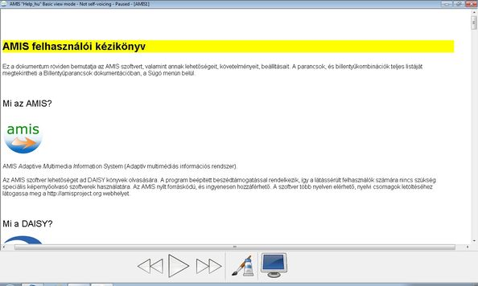

Ez a dokumentum röviden bemutatja az AMIS szoftvert, valamint annak lehetőségeit, követelményeit, beállításait. A parancsok, és billentyűkombinációk teljes listáját megtekintheti a Billentyűparancsok dokumentációban, a Súgó menün belül.
AMIS Adaptive Multimedia Information System (Adaptív multimédiás információs rendszer).
Az AMIS szoftver lehetőséget ad DAISY könyvek olvasására. A program beépített beszédtámogatással rendelkezik, így a látássérült felhasználók számára nincs szükség speciális képernyőolvasó szoftverek használatára. Az AMIS nyílt forráskódú, és ingyenesen hozzáférhető. A szoftver több nyelven elérhető, nyelvi csomagok letöltéséhez látogassa meg a http://amisproject.org webhelyet.

DAISY Digital Accessible Information SYstem (Digitális, akadálymentes információs rendszer). A DAISY könyvek teljesen akadálymentes digitális beszélő könyvek. A könyvek általános struktúrális elemei - úgymint fejezetek, oldalak, láb- és széljegyzetek, valamint könyvjelzők - egy olyan rendszerben lettek megalkotva, mely lehetővé teszi a gyors navigációt a felhasználók számára.
Valójában a dokumentum, melyet most olvas egy DAISY könyv! Látható és hallható a szinkronizált szöveg és a hang, továbbá lehetősége van navigálni mondatonként vagy fejezetenként.
A DAISY szabvány egy globálisan elismert technikai szabvány, melyet eredetileg azok számára fejlesztettek ki, akik valamilyen fogyatékosság miatt nem képesek a nyomtatott szövegeket olvasni. Az információhoz történő fejlesztett hozzáférés elősegítése érdekében, alkalmazások széles választéka érhető el.
A DAISY konzorcium 1996-ban alakult, és olyan szervezetek növekvő partnerségéből áll, akik elkötelezetten fejlesztik az információhoz történő hozzáférés hatékonyságát azok számára, akik valamilyen fogyatékossággal élnek.
További információkat tudhat meg a DAISY-ről itt: http://daisy.org.
Az AMIS a következő formátumú dokumentumokat támogatja:
A következő PC konfiguráció szükséges:
Az AMIS telepítő figyelmeztet, amennyiben egy szükséges összetevő nem található.
A képernyő felosztása kétféle lehet: alapértelmezett és egyszerű. Az AMIS az alapértelmezett nézetben indul, amennyiben nem módosítja az "Indítás egyszerű nézetben" beállítást. Ezt megteheti a beállítások párbeszédpanelen.
Az alapértelmezett nézet négy fontosabb részből áll: menü, eszköztár, navigációs ablak a bal oldalon, és a tartalom ablak a képernyő középső részén.
Az AMIS képernyőképe
Az eszköztáron tizenegy közepes méretű gomb található: könyv megnyitása, CD betöltése, ugrás az előző mondatra, lejátszás/szünet, ugrás a következő mondatra, lassítás, gyorsítás, betűméret csökkentése, betűméret növelése, az oldal stílusának megváltoztatása, és könyvjelző hozzáadása.

Az eszköztár
A navigációs ablak egy vagy több lapfüles listát tartalmaz, ez függ a megnyitott könyv tartalmától. Az első lista mindig a fejezetek egy hierarchikus listája. Amennyiben a könyv tartalmaz oldalszámokat, ezek a második listában láthatók. A további listák egyéb, speciális elemeket tartalmazhatnak, úgymint lábjegyzetek, ábrák, az egyes elemtipusok mindig a saját listájukban jelennek meg .
A navigációs ablak
Az egyszerű nézet két főbb részből áll: egy eszköztár hosszan a képernyő aljában, valamint a tartalmat megjelenítő ablak a képernyő közepén. Az eszköztáron négy nagyméretű gomb helyezkedik el: ugrás az előző mondatra, lejátszás/szünet, ugrás a következő mondatra, visszaváltás az alapértelmezett nézetre. Az egyszerű nézetben nincs menü vagy navigációs ablak.
AMIS az egyszerű nézetben
A következő fejezetek röviden leírják az AMIS lehetőségeit, kategória szerint rendezve.
DAISY könyveket tárolhat a merevlemezen, CD ROM-on, vagy egy távoli számítógépen.
A program a DAISY könyveket automatikusan lejátsza a könyv elejétől a végéig. A következő visszajátszási jellemzőket tudja vezérelni:
A lineáris visszajátszáson felül, a DAISY számos navigálási lehetőséget kínál.
Egy könyv struktúrájának tallózásához használja a navigációs ablak elemeit.
Az AMIS kiadvány összegző párbeszédpanelén könnyedén lehetősége van részletesebb információk megjelenítésére az aktuálisan olvasott könyvről. Az alábbi lista tartalmazza az elérhető részleteket:
A kiadvány összegzése párbeszédpanel
Az AMIS felhasználói felületén különféle megjelenítési módok közül választhat a képernyő felosztásához, és a DAISY könyvek stílusához.
A Fájl menü Beállítások párbeszédpanelén a következő beállítási lehetőségek érhetők el.
A beállítások párbeszédpanel
A Nézet menü Szöveg stílusa párbeszédpanelén a következő beállítási lehetőségek érhetők el.
A Szöveg stílusa párbeszédpanel
Az AMIS angolnyelvű honlapja http://amisproject.org. Itt megtalálhat minden információt az új kiadásokról, az elérhető nyelvi csomagokról, jelezhet hibákat, és csatlakozhat a projekthez. Várjuk jelentkezését.
Az AMIS szoftver honosított változatát az "Informatika a látássérültekért" Alapítvány (www.infoalap.hu) készítette. Kérdések esetén keresse fel ügyfélszolgálatunkat az alábbi elérhetőségek valamelyikén: